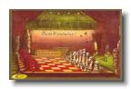
Introduction
White to play • The pieces are in their starting position for the next game of chess.
The first card in the series says, 'Carte d'invitation' (Invitation Card) and 'les blancs jouent' (White to play). The players are equipped with a wine glass and bottle each (it's a French card for sure!), plus cigars. The player on the White side of the board has the cigar clipper and lighter; the player on the Black side has the ashtray. • The White Queen is a little taller than the White King. On most modern chess sets, the King is taller.
Introduction
|
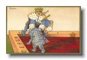
Castling
The King hops over a Rook • The Black King executes a castling move with the Kingside Rook.
The Black King is about to land on the g8 square, its destination after Kingside castling. The Rook will land on f8.
The image is slightly unrealistic for two reasons. First, the Rook, which moves from h8 to f8 when Black castles Kingside, is shown on d8, a square it never touches during castling. Second, castling is a King move and the rules require a player to move the King first. Most players do this by moving the King from e8 to g8 (or e1 to g1, etc.), then hopping the Rook over the King. The King never hops over the Rook.
Castling
|
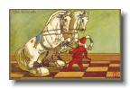
A Fork
A Pawn forks two Knights • A lowly Pawn faces two menacing enemy Knights, but both are on squares where the Pawn is allowed to capture.
The Pawn holds a two-prong spear, a symbol of the fork. Unless White has an immediate diversion, one of the Knights will be lost on Black's next move.
A Fork
|
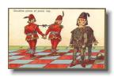
Doubled Pawns and Connected Pawns
The Pawn structure depends on the relationships of the Pawns with each other. • Connected Pawns are strong, while doubled pawns are weak.
The White Pawns to the left side are called connected Pawns, because they are on adjacent files. They can protect each other as they advance and are considered strong.
The Black Pawns to the right are called doubled Pawns, because they are on the same file. They cannot protect each other and are considered weak. An enemy piece in front of the more advanced Pawn blocks both Pawns, and neither Pawn can force the enemy to leave by attacking it.
Doubled Pawns and Connected Pawns
|
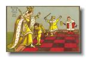
Pawn Promotion
The Queen returns on d8 • A White Pawn which has just reached the 8th rank promotes to a Queen.
The Pawn steps aside as the Queen prepares to take its place on d8. The White King is overjoyed, while the Black King bows his bare head signalling that his game is lost. King and Queen against King is an elementary win.
In this illustration the artist shows the Pawn being replaced by the Queen. Many chess players prefer to think of Pawn promotion as the Pawn becoming a Queen, in the same way that a caterpillar becomes a butterfly.
Pawn Promotion
|
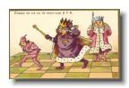
Chase to the 8th Rank
Whether or not a King can catch a Pawn is a matter of life and death. • The Pawn races to promote on the 8th rank and the enemy King races to stop it.
The White Pawn is one step from Queening and the Black King is one step from catching the White Pawn. The result of the game depends on who has the next move.
Chase to the 8th Rank
|
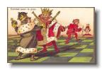
Fight for the Pawn
The advantage of a single Pawn often decides a chess game. • With no other pieces on the board, the advantage of a Pawn is enough to win a game. Here the White King prevents the Black King from chasing the Pawn.
Although the image is titled 'fight for a Pawn', the fight is already over. The King Black has failed to stop the advance of the White Pawn.
The White King on e4 is blocking the Black King on e2. If it is Black's turn to move, the Black King can't advance toward the Pawn. The best it can do is move sideways. If it is White's turn to move, the White King isn't required to move because the Pawn can move instead. Even if the White King did not stand between its own Pawn and the enemy King, the Black King would be too far away to catch the Pawn.
In two moves the Pawn will reach the 8th rank and will be promoted a to a Queen. The new Queen is already waiting next to the Queening square.
Fight for the Pawn
|
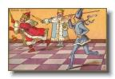
Check to the King!
An attack on the King can't be ignored. • When the King is attacked, it must move away from the attack.
The Bishop in blue is moving to the light square under its foot. That places it on the same diagonal as the King in red, when it will be attacking the King. The King is obliged to move.
There is a small problem with this drawing. Do you see it? [Hint: How many ranks and files on a chess board?]
Check to the King!
|
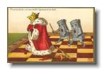
Pursuit of the King to Mate on the 8th Rank
Two Rooks can force mate by driving the enemy King to the side of the board. • Two Rooks can force mate without the aid of their King. They drive the King rank by rank, or file by file, to the side of the board.
The King on the 7th rank is about to be checked by one of the Rooks. Since the other Rook prevents the King from escaping to the 6th rank, it is forced to move to the 8th rank. The Rook on the 6th rank will then check on the 8th rank, administering checkmate.
Pursuit of the King to Mate on the 8th Rank
|
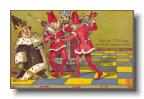
Mate on the 7th Rank by the King and two Bishops
King and two Bishops easily force mate against a lone King. • The Bishop moving from h5 to g6 is about to administer checkmate.
Two Bishops aided by their King can force the enemy King to the side of the board. They do this by operating on adjacent diagonals. Once the enemy King is forced to the side, it is easily checkmated. • The picture shows that the Bishop is moving from h5, but even if it were shown firmly planted on g6, we would know the winning move. How? • Can you also determine the checkmated King's previous move?
Mate on the 7th Rank by the King and two Bishops
|
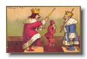
Stalemate
When the King has no moves and isn't in check, the game a draw. • The White King has no legal moves and isn't in check. The game is a draw by stalemate.
The White King on h1 can't take the Pawn and it can't move to g2, because the Black King attacks both of those squares. Neither can it move to g1, because the Pawn attacks that square. Since it has no moves, the game is a draw.
The Black King is angry with the Pawn, which is cowering in fear. In fact, the stalemate is not the Pawn's fault. When the opposing King is anywhere in front of a lone Rook Pawn (an a- or h-Pawn), the game will be drawn. The strong side can't force the other King off the Rook file, and the situation shown in the picture is inevitable.
Stalemate
|
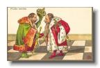
Drawn Game
When there are no pieces other than the two Kings, the game is drawn. • The game has been hard fought. The two opponents have swapped off all of the Pawns and all of the pieces. The game is drawn.
The diagram is an example of a draw because of insufficient mating material. There is no reason to play further. Neither side can ever win. • Of course, in a real game, the two Kings would never stand on adjacent squares, as in the picture.
We hope you enjoyed the little tour of the pieces in action. The images bring the rules of chess to life, don't they!
Drawn Game
|
{kind=link}
{kind=link}
{kind=link}
{kind=link}
{kind=link}
{kind=link}
{kind=link}
{kind=link}
{kind=link}
{kind=link}
{kind=link}
{kind=link}